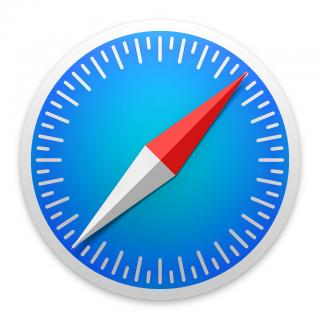

How to create a web page
The purpose of this session to teach you how to build a web page. In our session we will go over the following:
- General discussion about the web and internet
- History of the web and internet
- Creating a web page.
Let's talk about the web and the internet :)
- What do you know about the "web?" What do you use the web for?
-
Do you know how many websites that are actively online in the web?
- Over 1 billion sites and counting...To see the running count check out running website count
- Do you know what was the first website ever created on the web? info.cern.ch, which was created by Tim Berners-Lee Aug 6, 1991. Tim also invented the world wide web in 1989 (see The birth of the web).
-
What's the difference between the web and the internet?
- The web or world wide web is a system of interlinked documents and\or web pages accessible through the internet. It's actually a piece of software that runs on a machine. Pretty cool huh !!!
- The internet leverages telephone lines, cables, or wireless connections to connect computers and other devices to the web.
- What's the job demand for anyone that knows at least HTML?
Let's talk about the history and how the internet and the web got started
Let's start in the 1950s - Cold War and Sputnik
Remember the Cold War???
 |
Russia launched its first man made satellite into orbit, known as Sputnik

American fears continue to grow and....

The US is losing the race to space!!!

Out of growing concern of a Russian attack and the US losing the space race against Russia, our goverment created the Defense Advanced Research Projects Agency(DARPA).
DARPA has owned the critical mission of keeping the United States out in front when it comes to cultivating breakthrough technologies for national security rather than in a position of catching up to strategically important innovations and achievements of others.
1960s - The Internet is born through ARAPNET
What is ARAPNET? The Advance Research Projects Agency Network or the first private computer network.
ARPANET was designed to facilitate communications between ARPA computer terminals during the 60's, also provided government leaders a way communicate during attacks by Russia. The US Military took interest as well to develop a survivable communication structure in the event of a nuclear attack.

The concepts that were used developed to implement ARPANET are the foundations of the Internet. Provided below are the some of major concepts that ARPANET was built on:
-
"Galactic Network" this idea paved the way for networks and devices to be connected allowing users to share information over the internet.

-
"Distributed Communications" model or "hot-potatoe routing"
- Allow communications between computers to continue even if one node goes down, because there's still multiple nodes available to continue communication between multiple users.
-
How? Networks of unmanned nodes acted as switches, routing information from one node to another to thier final destination.

-
The goal was to ensure that a network would surive a major attacked by our enemies.

-
Packet switching" breaks down data into "packets" before sending across the network. Multiple "packets" are sent separately and then rejoined togeather once all the "packets" has reached your machine. Packet switching provided a more efficient use of a network by increasing the ability for network communications to continue to function regardless of abnormalities (or an attack from Russia :() or network latency.

-
The first network experiment linking two computers took place between the TX-2 computer by Lincoln Labs and the Q-32 mainframe operated by the RAND corporations System Development Corporation.


1970s - ARAPNET reaches across the pacific and the alantic
Robert Kahn introduces email at the International Computer Communication Conference which increase interest and importance on developing a strong and robust network.
Ray Tomlison created the first email programs called SNDMSG and READMAIL which allowed people to read and respond to emails.
TCP/IP was created to solve the network strain as more and more computers were added to the network.
- Transmission Communication Protocol/Internet Protocol
- Developed by Vinton Cerf and Robert Kahn
- TCP/IP allowed for individual network to stand along such that one network was brought down, it would not cause the collapse of all joined networks.
- The ongoing R&D of the TCP/IP protocol eventually lead to the creation of the internet.
Linking and organizing information and personal computers begin to emerged
In 74 Ted Nelson advocates for users to be interested into computers, networks and proposes the start of HTML.
In 76 Steve Jobs and Steve Wozniak founds apple and then in 78 Apple launches Apple II.
In 79 USENET allows users to submit messages to newsgroup and makes electronic communications much easier.
- Developed by Tom Truscott and Steve Belloin uses a UNIX program that allows files to be sent between networked computers to exchange electronic newsletters between Duke University and UNC through dial-up connections.
1980's - The Internet begins to take shape and becomes public
The age of dial-ups begins
Systems like PhoneNet and CSNET begin to emerge for users to establish internet connections to networks like ARPANET and then to Telenet.
- PhoneNET was created by Dave Farbert and developed and funded by the National Science Foundation.
- CSNET system was created to offer an less costly PhoneNet services and it expands the gloal reach of the internet by allowing e-mail communication between US and various countires like the UI, Israel, Germany, France and more.
ARPANET is split up into MILNET and ARPANET.
- MILNET servers the needs for the national defense and the military communities
- ARPANET is used by academics and researches. This is the first steps towards commercializing the Internet.
As more users and networks gain access to the Internet, there is a need develop a method of naming and addressing users and host names\networks, then can the Domain Name System.
- DNS was created to divide the Internet names between host names and usernames. For example: yahoo.com and bhunter@yahoo.com
-
ARPANET created six domains
- .edu (Education)
- .gov (Government)
- .mil (military)
- .com (commercial)
- .org (other organizations
- .net (network resources)
Tim Berners-Lee invented the world wide web in 1989. To learn more about Tim Berners-Lee, check out
1990s - The Internet get's a bike, but the goverment requires training wheels
HTML (HyperText Markup Language) and URL (Universal Resource Locator) are created.
- Berners-Lee and his colleagues developed a shared format for hypertext documents which was named as hypertext markup language.
- Berners-Less and others created the uniform resource locator which is used as a standard address format that could specify the computer being targeted and the type of information being requested.
- HTML and URL increased the interaction between users and networks across the internet.

Al Gore sponsors the High Performance Computing Act which establishes the National Research and Education Network.
As more companies come online such as Yahoo, Amazon, Ebay, Google, and others, the US government steps into to regulate radio and television to the internet.
- The Communications Decency Act or Telecommunications Reform act was created to regulate the content on the web.
Companies joins the "Online" wave
-
Amazon launches Amazon.com
- Yahoo search engine and Ebay come online
- Microsoft Internet Explorer web browser is avaliable
 |  |
Towards the end of the 90s, trouble begins for the web:
- The rise of Internet music and video piracy becomes a major concern through websites like Napster.Shawn Fanning, the creator of Napster develops a website that allow users to illegally download much for free.
- The first malicious computer virus, called "Melissa virus". The virus was capable of automatically copying and sending itself to all email address listed in an infected users address book.
2000's - The internet revolution continues, without it's fare share of bumps and bursis
The internet burst its bubble...See Dotcom Stock Bust.
Google becomes the largest search engine in the world.
The first offical instance of internet voting takes place during a Democratic party primary in Arizona.
Recording Industry Association of America wins its lawsuit against Napster and then Napster is shut down. That put a damper on college students 😔
Mobile and Tables offers different ways to view the web.
WiFi networks becomes more avaliable
More and more retail stores begin to replace their store fronts for online business.
Security becomes a greater concern as more and more devices are connected to the internet.


"The Cloud" gains traction and market share.
 |
Skynet is here....IOT and robots become new areas of studies.
What's next for the internet? What websites do you want to build?
Let's talk about how web pages work
How do we access websites? Using browsers. What is a browser?
- Its a piece of software that allows you to view web content from your desktop, laptop or phone.
-
Browsers comes in many different flavors:
Chrome Firefox Safari Internet Explorer 


To access an website, we have to type in the url of a website, like www.espn.com, facebook.com or https://ironmeninc.com/
What is a URL?
- URL is an acronym for Uniform Resource Locator and is a reference (an address) to a resource on the Internet. Find out what Waston's parent says about URL
-
A URL has four main components:
-
Scheme - defines the protocol, for example:
- http (HyperText Transfer Protocol) - used to serve up hyper text documents.
-
https (HTTP over Transport Layer Security)
- Its a secure version of HTTP (HTTP over Transport Layer Security).
- Provides protection of the privacy and integrity of the exchanged data.
- HTTPS uses certificates to secure your information on websites
- File, FTP and FTPS
- A host - identifies domain that holds the resource. For example: www.espn.com, microsoft.com
- Path - identifies the specific resource or page in the host that the user wants to access.
- Query - if one is used, its used to search for data within the host or enable a functionality.
-
Scheme - defines the protocol, for example:
Let's see what happens when you browse to a website? How does the internet work?
When you type in a url, like www.espn.com a request is sent out to www.espn.com to get content.This means your requesting content from the website espn.com.
espn.com is located a web server.
espn.com is a domain name. A domain name is a user-friendly name that is translated into the IP address of the web server where a website is hosted.
What translates a user-friendly name to an IP address? Domain Name System.
Domain Name System - is set a of standards for how computers exchange data on the Internet. A DNS will lookup and translate espn.com to the IP address of the web server where espn.com is hosted.
Web servers (and other types) uses an IP address to identify each other.
The actual IP is a unique string of numbers that is separated by periods that identifies each computer using the set of standards to communicate over a network.
Let's check out the IP address of espn.com:
- Open a command window or search for the program Command Prompt. See How to open a command prompt (on Windows XP, 7,8,10)
-
Type in the following command: ping espn.com and you should see an IP.
Let's check out your current machine's IP:
- Open a command window or search for the program Command Prompt. See How to open a command prompt (on Windows XP, 7,8,10)
-
Type in the following command: ipconfig /all.Look for the label IPv4 and this is your machine's IP address.
Once you make your request, a response is returned to you of the espn.com.
This response will contain web contents that you're requesting, this includes the web page, images, external files,etc....
Your response can be pretty big pending on what you're requesting being returned. Since a response can be big, responses are broken down into packets.
A packet contains important information about your request and response. The two most important bits of information are the IP address of the web server, the content (web page, images, external files) and the IP address of your computer.
Since we have content that expands across globe, we need special devices like switches and routers to connect devices together so that we can share information around the internet. See Hub, Switch or Router? Network Devices Explained
A switch is a smart device that connects together many different devices so they can act as a network. Sometimes simpler devices called 'hubs' are used.
How to create a web page
Web page formats (.html, .htm, server side pages (.aspx, .php,etc..)
What is HTML?
- Its a standard markup language for creating languages.
- HTML standards for Hyper Text Markup Language
- HTML uses elements and attributes to build a web page.
What are Elements and Attributes?
-
Elements
- Elements are the building block of a web page. Typically referred to as "Tags", they are used to give instructions to your browser on how to handle them.
- Elements are usually created with a start and end tag. Example:
- Elements are non cast sensitive, but it is recommend you use lower case to define your elements.
- Common elements are: HTML, BODY, H1,H2, P, A,IMG, Table,ul, ol
- Elements can be left blank and they can be nested within each other.
- Check out HTML Elements for more info.
-
Attributes
- Attributes defines the properties of an element.
-
Attributes can be used to style an element or provide information about an element.
- Check out HTML Attributes for more information.
HTML Basic
- Let's open up a online web editor, called Plunker
-
DOCTYPE - all html documents must start with this tag. This tag defines the HTML version that you're using.
- Definition:
- After the DOCTYPE, we have a HTML tag. Every document must have it in order to properly display your web page.
- Within the HTML tags, we have two additional tags that are required: Head and Body. Head is not visible to end users, but its used to include external files and defined metadata about the document. Body is visble to end users and its where you added your content.
-
Common HTML elements
-
Headings
- Used to display a heading for you website.
- Ranges from H1 to H6, where H1 defines an important heading and H6 defines a less important heading
- HTML Headings
-
Paragraphs
- Used to display your content in paragraph format.
- Ranges from H1 to H6, where H1 defines an important heading and H6 defines a less important heading
- HTML Paragraphs
-
Links
- Used to link to different documents, websites, applications or content within the same page
- HTML Links
-
Images
- Used to display images on a web page
-
-
Attributes:
- src - defines the location of the image
- width and height - defines the width and height of the image
- alt - displays a caption for an image.
-
Attributes:
- HTML Images
-
Tables
- Good for display data in a grid, tabular data, used alot in display stats for team or player.
-
-
Sub-Elements:
- th - table header
- td - table column
- tr - table row. You can use table rows to replace table header.
-
Sub-Elements:
- HTML Tables
-
Lists
- Good for display items in a list or steps on a page.
-
-
There are 2 common list types:
- Unorder list - bullet points
- Sorted List - items listed by number or character
-
There are 2 common list types:
- HTML Lists
-
CSS
- Stands for Cascading Style Sheets
- Used to make your pages look pretty
- CSS can be applied directly to elements using the style attribute.
- Every element has an style attribute.
-
CSS can be added to your page in three different ways:
- Inlined - using style attribute on an element
- Internal - using the style tag
- External - using a .css file
- HTML CSS
Let's build a page
- We're going to create an "About Me" page, which will include:
-
- A picture of your choice.
- A description of yourself
- Education experience and any job experience
- Links to your social media account(s)
- A list of your favorite sites.